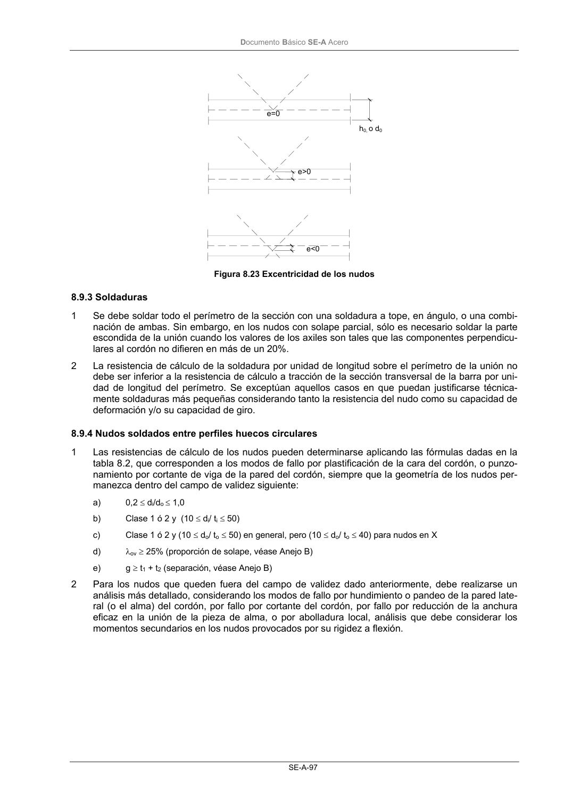

DB-SE-A · 8.9.2 Análisis · versión 2007-10-23 · capa oficial
Formatos: JSON compacto · Markdown · PDF fuente
Ámbito del documento · texto del ámbito · documento y tablas
ID técnico a0137 · PDF pág. 98-99 · jerarquía no validada por persona · contrastado con el literal de la página 98 (candidato tipográfico); no validado por persona · padre: raíz
8.9.2 Análisis 1 En el análisis de una viga de celosía se puede suponer que las barras están conectadas por nudos articulados cuando: a) Las características geométricas de los nudos esté dentro del campo de validez especificado en el apartado 8.9.4, la tabla 8.3 y la tabla 8.5. b) La relación entre la longitud de la barra y su canto o altura en el plano de la viga no sea me- nor que: - 12 para los cordones. - 24 para las barras de alma. 2 Pueden despreciarse las excentricidades que permanezcan dentro de los límites siguientes: -0,55 do≤ e ≤ 0,25 do (8.82) -0,55 ho≤ e ≤ 0,25 ho (8.83) siendo e es la excentricidad (figura 8.23); do es el diámetro del cordón; ho es la altura del cordón en el plano de la viga de celosía. DocumentoBásico SE-A Acero SE-A-97 Figura 8.23 Excentricidad de los nudos

PDF fuente redistribuible: copia fiel enlazada en esta página (SHA256 verificado).